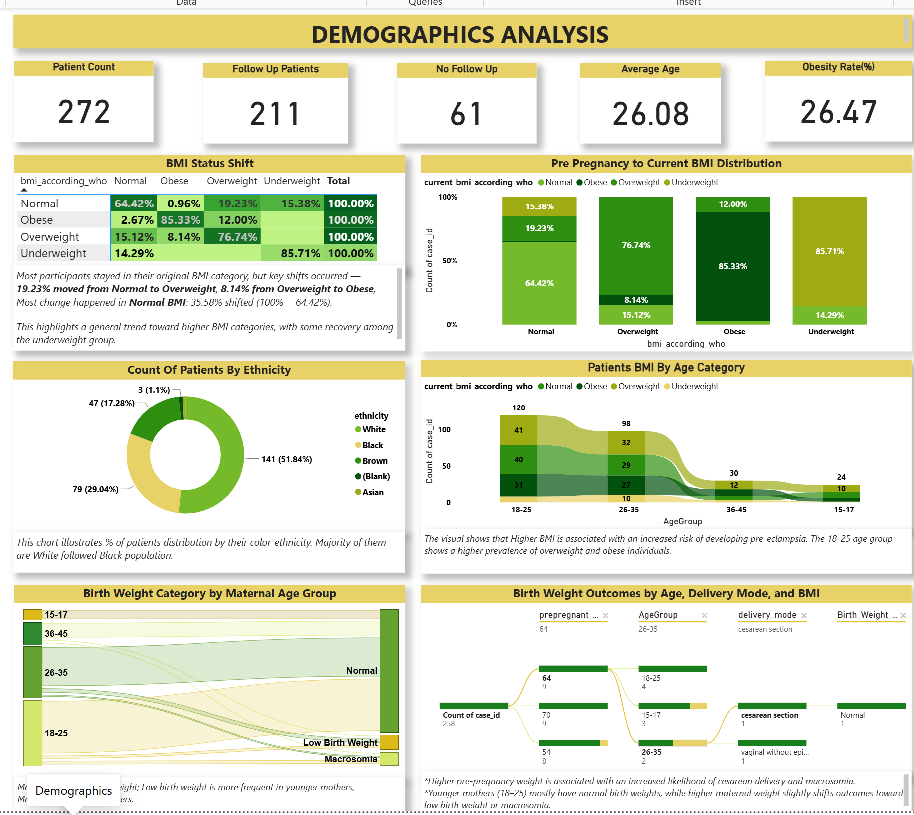
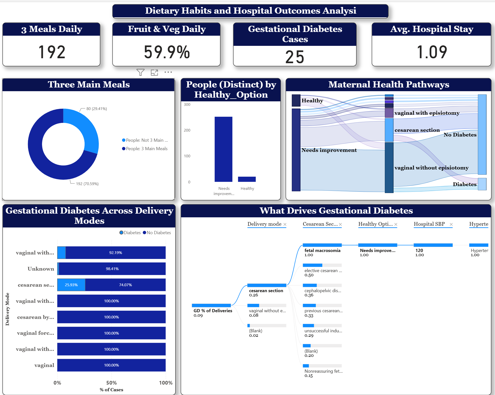
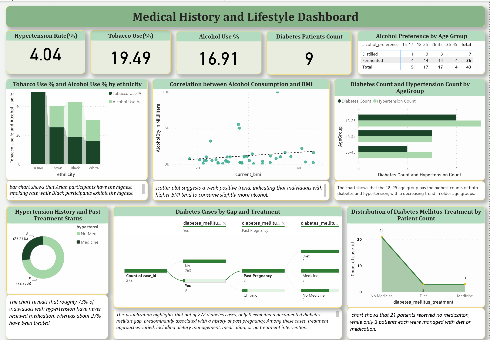
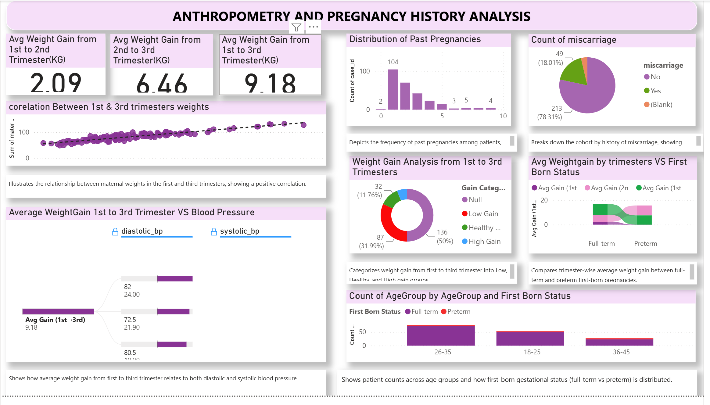
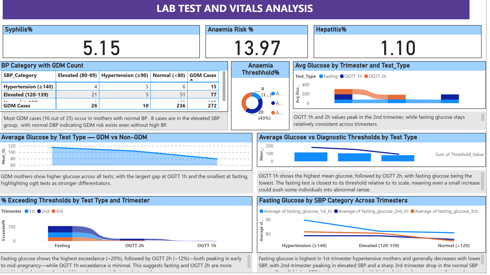
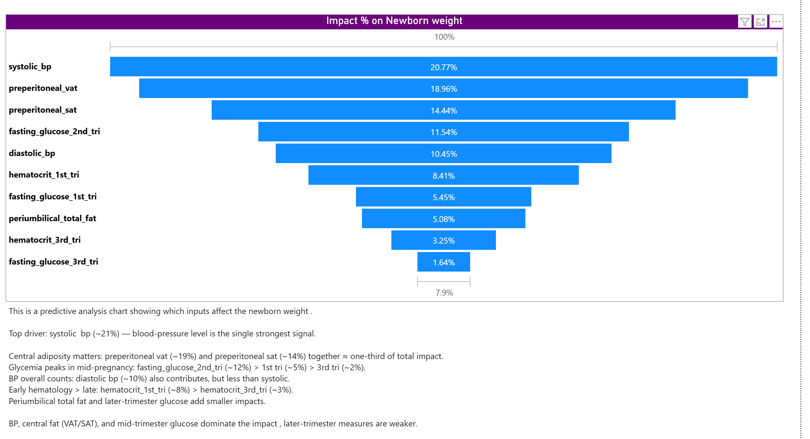
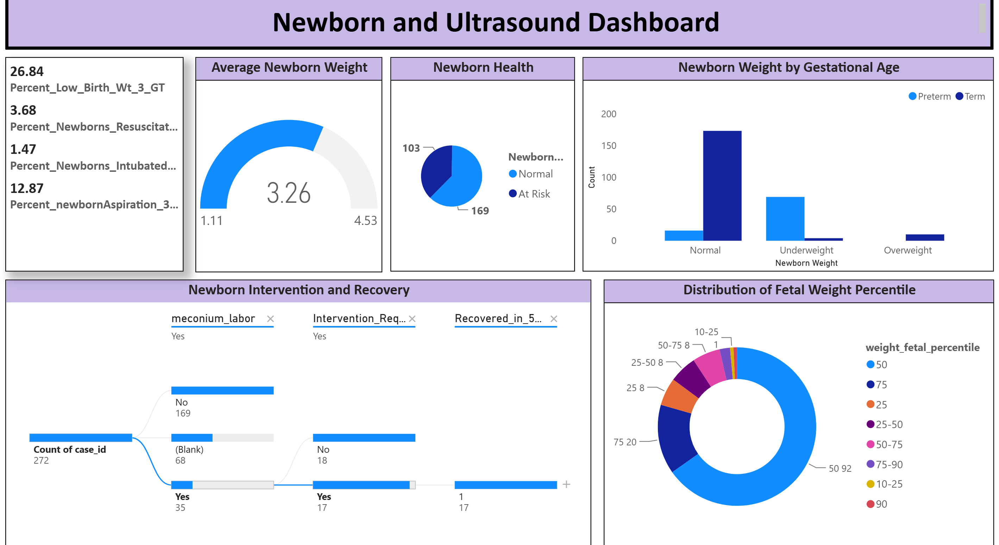

A Power BI dashboard suite analyzing 272 pregnancy cases from the PhysioNet maternal ultrasound and nutrition cohort, examining how maternal fat, demographics, lifestyle, lab values, and pregnancy history relate to gestational complications and newborn outcomes.
Predictive analytics identifying the key drivers of newborn weight was performed in Python, with the resulting feature-importance insights visualized directly within the dashboards below.







Across the 272-case cohort, maternal blood pressure and central adiposity (visceral and subcutaneous fat) emerged as the strongest predictors of newborn weight — together accounting for over half of the predictive signal identified through Python-based feature-importance analysis. Gestational diabetes risk tracked closely with delivery complications such as fetal macrosomia and elective C-section, while glucose control in the second trimester proved more consequential than first- or third-trimester readings.
Demographic and lifestyle patterns also shaped outcomes: younger mothers (18–25) showed both higher rates of preterm birth and a higher prevalence of overweight/obese BMI, and a meaningful share of hypertensive and diabetic patients went untreated during pregnancy — pointing to a gap between diagnosis and intervention. Taken together, the dashboards suggest that early monitoring of blood pressure, adiposity, and second-trimester glucose, paired with more consistent treatment follow-through, could meaningfully improve gestational and neonatal outcomes in this population.